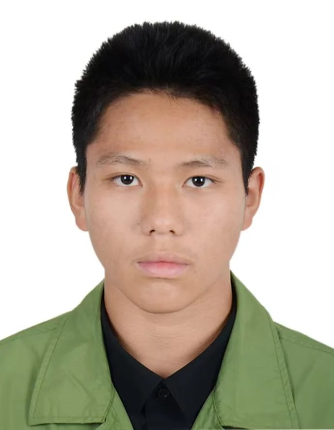

I am Zhuoli Yang (杨卓力), a high school student (Class of 2027) fascinated by how living systems are engineered. From hands-on osteological articulation and multi-species vivarium husbandry to biomechanical structure-function relationships, I investigate the logic underlying biology.
"Articulating a skeleton this fragile does not forgive guesswork. Starting with small, reversible trials before committing to an irreversible step taught me that patience alone was not enough. I also needed a method."
— From Personal Statement on Tigerfish Articulation
Bridging personal laboratory projects with high-school science fundamentals and an ambition for advanced molecular research.
My curiosity about biology did not start from textbooks alone. For years, I maintained a dynamic vivarium at home, keeping various species of fish, reptiles, spiders, and scorpions. Caring for these living systems required mastering water chemistry, microclimate temperature gradients, and differential diagnoses—distinguishing, for instance, between parasitic white-spot infections requiring stepwise thermal escalation and bacterial ailments demanding strict feed restriction and biological filtration.
This hands-on instinct culminated in my specimen articulation project with the goliath tigerfish (Hydrocynus goliath). Facing the risk of bone dissolution during chemical defatting with sodium hydroxide (NaOH), I devised an initial trial protocol on a crucian carp to determine safe concentration and soak windows. Once the soft tissue was cleared, I reassembled the vertebral column and cranial joints by matching unfamiliar facets against biomechanical movement constraints—a method reminiscent of solving rigorous mathematical proofs.
Through this process, I began to see living form not as static geometry, but as the direct outcome of physical forces and molecular adaptations. Three questions continually guide my thinking:
"Zhuoli stands out for his lively thinking and strong capacity for conceptual migration—frequently linking microscopic molecular characteristics to macroscopic ecosystem behaviors. When facing unfamiliar biological scenarios, he remains calm, breaks down problems systematically, and verifies hypotheses against scientific literature."Kunming Xishan Long-Spring Exp. Middle School
Independent research, specimen articulation, and diagnostic husbandry.
Controlled chemical defatting using NaOH trials calibrated on crucian carp (Carassius carassius), manual articulation of vertebral columns, and joint angle inference.
Management of closed aquatic and terrestrial micro-habitats (reptiles, scorpions, fish). Synthesis of multi-language veterinary care guides and water chemistry protocols.
Investigating the biomechanical paradox of high-power saltation without structural fatigue; exploring the role of resilin proteins and cuticular microstructures.
Experiencing diverse educational paradigms across the United States and Australia.
Student Delegate representing Switzerland in the Second Committee (Economic and Financial) at United Nations Headquarters. Drafted resolutions with 800+ international peers.
Attended introductory collegiate science lectures, surveyed university laboratories, and earned an official Certificate of Completion during a focused academic study tour.
Completed peer-led problem-solving workshops with Harvard Student Agencies (HSA) and joined endurance and collaborative communication sessions at UNSW Arc.
Developing aesthetic discipline, breath control, and visual sensitivity.
Maintained disciplined, uninterrupted instrument practice through years of rigorous high-school academics. Completed comprehensive repertoire evaluations from Grade 1 through Grade 10, mastering advanced breath control, embouchure stability, and polyphonic phrasing.
Documenting biological subjects in nature and in vivaria. Focusing on capturing micro-morphological features: insect cuticle patterns, leaf venation, and structural coloration.
Standard high school curricula follow structured cookbook procedures. My goal is to enter a rigorous undergraduate research framework—such as the HKU 6688 Science Master Class (Intensive Major in Molecular Biology & Biotechnology / Young Scientist Scheme) or premier life science institutions in Singapore and Hong Kong.
Direct pairing with principal investigators to test self-directed hypotheses under formal guidance.
Mastering structural biology, bio-imaging, and protein engineering technologies.
Comprehensive training in research ethics, reproducible protocols, and peer collaboration.